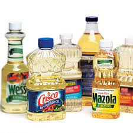
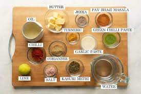
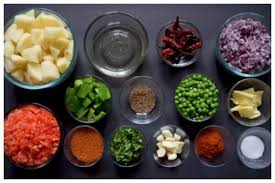
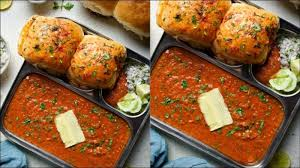

Pav Bhaji is a fast food dish from Mumbai (Bombay), India, consisting of a vegetable curry (bhaji) cooked in tomato gravy and served with a soft bread roll (pav).
This is a very popular recipe in India, liked by almost everyone. You may have to go to a nearby Asian Indian store to get the 'Pav Bhaji Masala' that is the special spice to bring the flavor (Masala means spice). Pav is actually the buns. Bhaji is
the vegetables cooked with spice.
ingredients
½cup vegetable oil

teaspoons chopped garlic

1 teaspoon finely chopped green chile peppers
1 cup chopped onions

2 teaspoons grated fresh ginger
1 cup chopped roma (plum) tomatoes
2 cups cauliflower, finely chopped
1 cup chopped cabbage
1 cup green peas
1 cup grated carrots
4 potatoes, boiled and mashed
3 tablespoons pav bhaji masala
salt to taste

1 tablespoon lemon juice
8 (2 inch square) dinner rolls
½ tablespoon butter
¼ cup finely chopped onion
1 tablespoon finely chopped green chile peppers
¼ cup chopped fresh cilantro
preparation
Add veggies like brinjal, broccoli, french beans, sweet corn etc per your preference for variation in taste and texture
Garnish hot bhaji with grated mozzarella cheese to make cheese pav bhaji.
The taste of bhaji greatly depends on the butter, so don’t reduce its quantity
Serve bhaji with roasted pav buns, chopped onion and sliced tomato in dinner. It can be also served as a party snack
Mild spicy
In this recipe we have used Badshah brand readymade pav bhaji masala but you can use any other brands masala